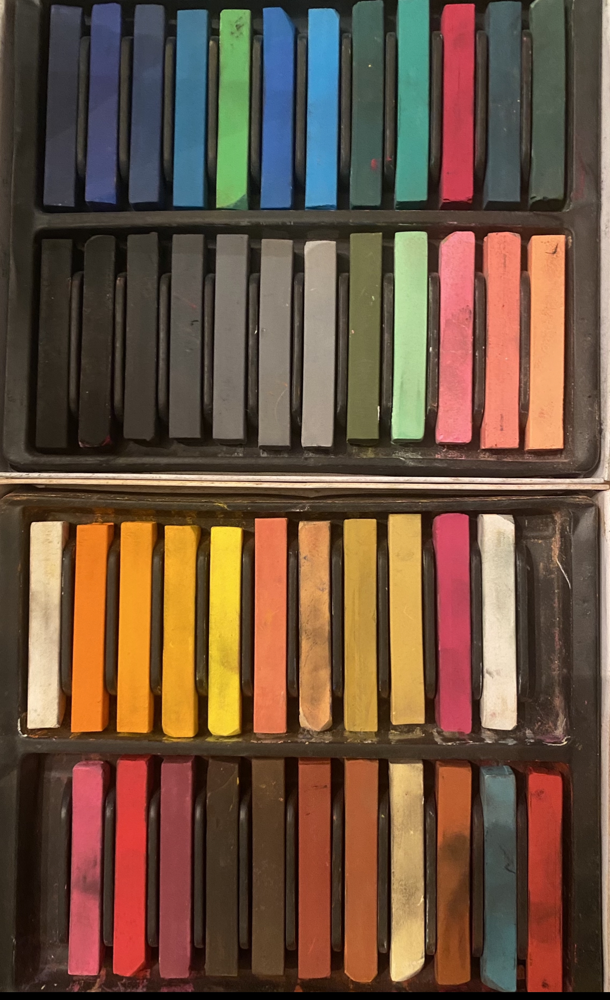
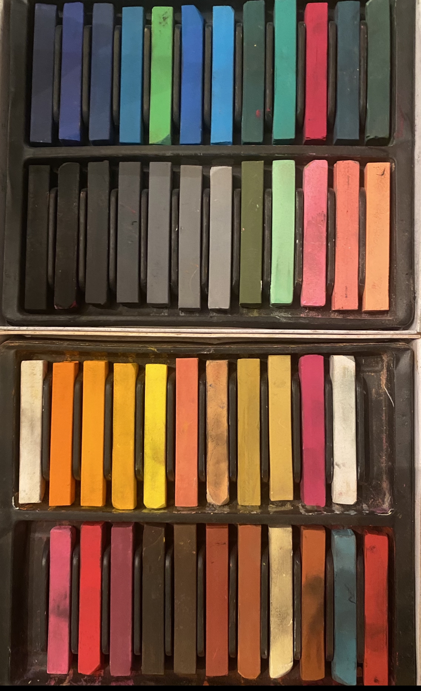

Hello and welcome to my webpage, my name is Gonzalo Lopez and I love the arts. Interests of mine include ballet, plays, dance choreography, origami, an array music and drawing. The hobby I will be focusing on is drawing. I enjoy drawing because it's something that can take minor planning and can be done either in public or private. You can draw with just a pencil or use a variety of art tools to draw. Most importantly, for me drawing is a great coping mechanism that can alleviate stress. Also, it gives me instant satisfaction seeing the end results.

 

Images by me
How to Start
Like mentioned above you don't need a complicated set up to begin drawing. You could use a sheet of paper, napkin, or even pavement depending on your art supplies at hand. Some art supplies you can use to draw with include; pencils, pens, markers, crayons, colored pencils, pastels, water colors, or your fingers to finger paint. Technology lets us draw digitally now as well. You would need to use a digital pen to draw with. Once you have chosen your preffered art supplies , all you need to do is grab your tools and begin applying light pressure on paper with them.
Resources and Tips
Click on this link, by Brandon Schaefer if you want to learn about sketching. If you are curious about soft pastel colors I suggest you click on this link by Michael Howley. Also, check out this link by the virtual instructor (Matt). A tip I have is to go on google images and search a term on anything you want to draw and practice copying it. This lets you practice your skills if your new to drawing and gives you endless images to choose from. One more tip I have is start by drawing simplee shapes first and once your ready move to drawing those shapes in 3 dimensional form.